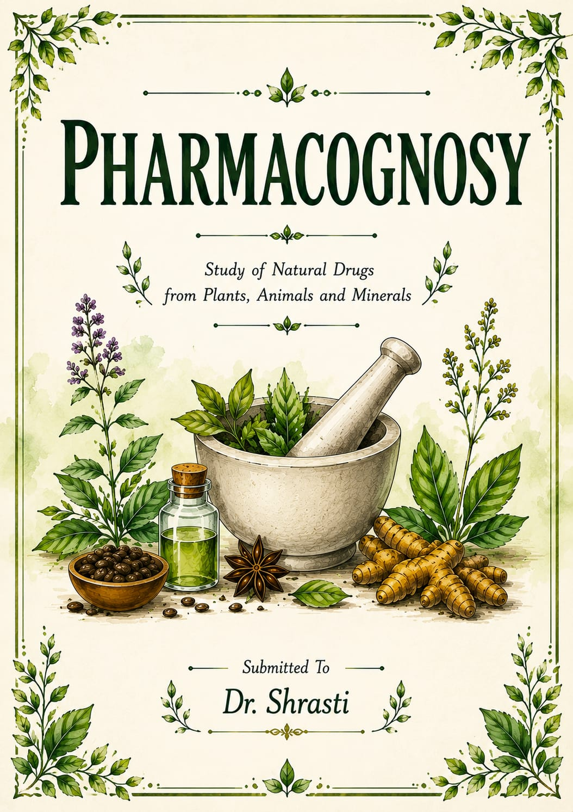

The medicines originated in Egypt and India. Medicines were recorded
both in Papyrus Ebers of Egypt about 1,500 B.C. and later in Ayurveda of
India. Papyrus Ebers(1600B.C) is an oldest documents containing 700
medicinal herbs and more than 870 formulae.
• A large portion of the Indian population even today depends on the
Indian System of Medicine - Ayurveda, 'An ancient science of life'. The
well known treatises in Ayurveda are Charaka Samhita and Sushrutha
Samhita. Ayurveda was evolved 4000 and 600 B.C and objective of
Ayurveda is not merely to cure the disease but to preserve the health
also.
• The treatise dealing with Ayurveda are Sushruta Samhita and Charak
Samhita both were complied between 500-300 B.C. Charak Samhita
deals mostly with plants and Sushruta Samhia deals with surgery.
• Hippocrates “Father of medicine” (460-360 B.C) gave his contribution on
anatomy and physiology of human begins.
Scope of Pharmacognosy:
• Pharmacognosy is critical in development of different disciplines of
science. The knowledge of plant taxonomy, plant breeding, plant
pathology and plant genetics is helpful in the development of cultivation
technology for medicinal and aromatic plants. Plant chemistry
(phytochemistry) has undergone significant development in recent years
as a distinct discipline. It is concerned with the enormous variety of
substances that are synthesized and accumulated by plants and the
structural elucidation of these substances.
• Extraction, isolation, purification and characterization of phytochemicals
from natural sources are important for advancement of medicine system.
The knowledge of chemotaxonomy, biogenetic pathways for formation
of medicinally active primary and secondary metabolites, plant tissue
culture and other related fields is essential for complete understanding of
Pharmacognosy.
• One should have the basic knowledge of biochemistry and chemical
engineering is essential for development of collection, processing and
storage technology of crude drugs.
Impurities in Pharmacognosy:
In pharmacognosy, impurities refer to any foreign matter or unwanted substances within natural crude drugs. They can degrade therapeutic efficacy, cause toxicity, and significantly reduce shelf life. Contaminants generally fall into biological, chemical, and physical categories
Key Types of Impurities:
Adulterants: Foreign or spurious plant materials deliberately added to bulk drugs to increase weight, volume, or apparent value (e.g., mixing cheap papaya seeds with black pepper).
Heavy and Toxic Metals: Elements like Arsenic, Lead, Cadmium, and Mercury that accumulate in plants from contaminated soil, air, or agricultural fertilizers.
Pesticides and Mycotoxins: Residual chemical sprays, or toxic mold byproducts (e.g., aflatoxins) that occur due to improper harvesting, drying, or humid storage conditions.
Microbial Load: Bacteria, fungi, and their metabolic waste products introduced through soil, unhygienic handling, or poor packaging.
Physical Debris: Harmless but unintended extraneous matter like stones, dirt, glass, or non-medicinal stems and root fragments.